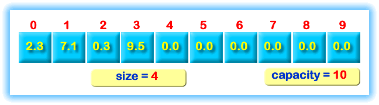
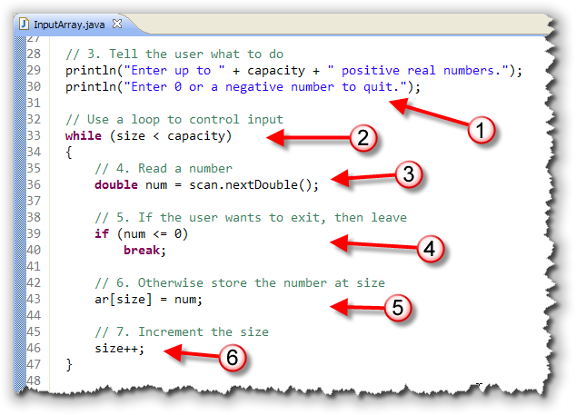
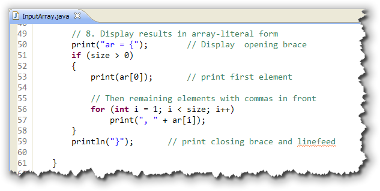
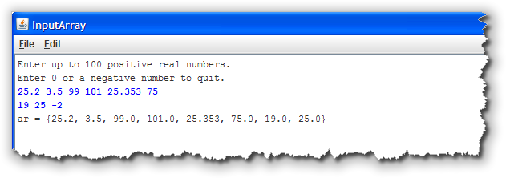

Sometimes, you don't need to process all of the elements in
an array, and so the algorithms you studied in the last chaper
don't exactly fit the bill. This is where the partially-filled
array comes in.
You'll want to use partial-array processing algorithms when:
- your array is constructed at run-time using user-supplied data. Since you don't know how many elements the array will contain, you'll need to know how to process a portion of an array by using sentinel loops, to keep track of how many elements the array contains.
- your want to insert or delete elements from an array. To do this, you need to supply space for the extra elements, and also keep track of which elements are valid. That means that you'll need to work with algorithms that modify a portion of an array by inserting or deleting elements.
In these situations, instead of using
the "natural" loop bounds, (from 0 to less-than the length), you'll need
to keep track of which elements you actually want to process. It also
means that you can't use the foreach version of the
for loop.
The most common reason for processing only "part" of an array is when only a portion of the array actually contains valid data. Since the size of an array can't be changed after it's created, programmers often "plan for the worst case", and make their arrays large enough to hold the maximum amount of data that could possibly be required.
Adding Elements
In the SumAvgCount applet (from the last chapter), we filled all of the elements with random numbers. Let's create an ACM console-mode program that allows the user to input any number of values, instead of automatically filling the array. In this chapter's code folder, you'll find a program, InputArray, that shows you how you'd do it.
Open the starter program in DrJava and type along.
Capacity and Size
To do this, we need to keep track of how many values the user
has entered, and how many empty slots are still available. Traditionally,
these two numbers are known as the array's capacity
and its size. Here's a picture that might make things
a little clearer:

The array shown here has alength of 10, which is also its
capacity. Only the first four elements have meaningful values,
though, so the size of the array is 4.
In the InputArray program, you should first create a Scanner
variable to read the user's input. Of course, since this is an ACM
ConsoleProgram, we could use the built-in
readDouble() method. However, the ConsoleProgram
read methods can only read one number per line, while the Scanner
methods let you place several numbers on the same line, and then "pick them off."
 Remember that when you use
Remember that when you use
System.in to initialize the Scanner object, your
input will come from the system console. We want to read
from the ACM program console, though, so we initialize our Scanner
using the getReader() method designed for just this purpose.
After creating the Scanner, create two
variables to store these numbers:
capacity, which stores the maximum number of items the user could enter,- and a separate variable,
size, to keep track of how many values have actually been entered.
Initialize capacity
using the built-in array length variable:
Reading the Input
To initialize the array, use a sentinel loop along with the user input. As each value is entered, store it in the array, and then increment the variable indicating the number of items in the array like this:

The input loop works like this:- The user is told what to enter and how to end the input (with a 0 or negative number).
- A "loop and a half" is used for input, with the necessary bounds, (that is, the maximum number of values have been entered), used to control the loop.
- Because we're using a loop-and-a-half, we need only
one input statement, into the local variable
num. - The loop's
ifstatement checks to see ifnumis the sentinel value, and exits the loop if it is. - If
numis a valid value, it is stored into the array, using thesizevariable as the index. - Finally, the
sizevariable is incremented, so that the next input value will be stored in the next element of the array.
Print the Results
The SumAvgCount program used a foreach
loop to process the array. With InputArray, though, you can't do that,
because not all of the values may in use. Instead, this program has to use
a traditional for loop because we only process the
"valid" elements, using the size variable to
control the loop:

We'd like the output to look similar to the syntax used to write an array literal, because it's a familiar form. That means that the loop we use to print out the values must put a comma after each element, except for the last. The easiest way to do this is to first, check the postcondition
value of size to make sure that the user has actually entered
any values. Otherwise, if the array is "empty", the loop would
"blow up" when we tried to print the first element in the array.
If the array does contain valid elements. The loop prints the first
element, and then all of the remaining elements starting at the
second. (Notice that the for loop index starts with
1 and not with 0.) Each output statement begins by printing the
following comma from the previous element, followed by the current
array element value.
Here's the output of the program with a few numbers entered:

Try It Yourself
Complete the InputArray program and run it with some input as shown above. There's no Check program for this exercise.
Inserting and Removing Array Elements
The final algorithms that we'll cover in this section involve inserting items into, and removing items from. an array. Suppose, for instance, that instead of simply adding items to the end of the "unoccupied" section of numbers in the InputArray program, we placed each number into its correct position in the array.
Here's a picture that shows what I mean:
 As you can see, the array is partially filled, and the next number, 3.25,
has been input by the user. To put the number in its correct location
we need to:
As you can see, the array is partially filled, and the next number, 3.25,
has been input by the user. To put the number in its correct location
we need to:
- Locate the first number that is larger than the number we're going to insert into the array. In this case, that's the number 7.1. That's where we'll place our new number.
- Before we can store the number in the array, though, the element that's currently occupying that spot, (7.1), needs to be moved to the right, and the number occupying the spot it is moving to, (9.5), needs to be moved to the right as well. Since 9.5 is the last valid value in the array, we can stop there, but if the array contained additional numbers, they'd have to be moved as well.
Finally, after all of the existing numbers have been moved to the right, we can come back and put our new number in the spot that's been opened up for it.
These algorithms usually only make sense when used with partially filled arrays, those that use a separate size variable indicating how many elements are actually occupied. If you insert an element into a completely filled array, then the last element in the array will be lost when the previous items are moved to make room for the inserted item. In a similar way, when you remove an item from regular array, you have to way of indicating that the last value no longer contains a valid entry.
The program InsertArray.java in this chapter's code folder is similar to the InputArray program from the previous section, except that the individual elements are added in sorted order. I won't repeat all of the portions of the program that are the same as InputArray; we'll just look at the three sections that are different. If you need help completing the other sections, look back in this section.
Find the Position
The first step is to find the position where the new element should
be inserted. You do that by writing a loop that looks for the first
element that is larger than the element you want to insert.
Here's the code that does that:
 Note that the index value used in the
Note that the index value used in the for loop is not
declared inside the loop initializer section (although it is initialized there).
That's because, after the loop is finished, the variable i will
contain the location where the new element should be inserted. If we
declared the variable inside the loop initializer, we couldn't use it
outside of the loop body.
Note also that if there are no elements in the array that are larger
than the number you are inserting, that i will contain the same
value as size when the loop ends, and that the number will then
be added to the end of the current elements, which is what we want.
Move the Existing Elements
Before we can store num in the array, we need to move the
existing elements to the right, to "open up a hole" for the new value.
Here's the code from InsertArray that does that:
 Note that rather than copying the elements from left to right, which
wouldn't work correctly, we start at the end of the array, and
move to the left, until we get to the location where we intend to insert
the new element.
Note that rather than copying the elements from left to right, which
wouldn't work correctly, we start at the end of the array, and
move to the left, until we get to the location where we intend to insert
the new element.
Insert the New Element
After moving the elements, you'll simply copy the new number into the
insert location, and then update the value of size as shown
here:
 If we run the program, using exactly the same input as we used when
we ran InputArray earlier in this lesson, you'll see that the
numbers that are printed are now in sorted order:
If we run the program, using exactly the same input as we used when
we ran InputArray earlier in this lesson, you'll see that the
numbers that are printed are now in sorted order:

Try It Yourslef
Complete the InsertArray program and run it with some input as shown above. There is no Check program but you can compare your results with the picture shown here.
Removing Elements
Removing the elements in an array works in an almost identical manner as inserting elements, except, instead of moving a portion of the array to the right, to "open up a hole", you need to move all of the elements to the right of the deleted element leftwards to "close up the gap".
Here's a small fragment of code that does that. The variable delPos
is the location of the element you want to delete:
for (int i = delPos; i < size-1; i++)
ar[i] = ar[i + 1];
Note that the bounds of this loop is not i < size,
but i < size-1. That's because, in the loop body we need
to grab the value to copy from ar[i + 1]. If we used
size as the bounds, we'd copy from an invalid element.

Partially Filled Arrays Summary
- A partially filled array is used when only some of the data is valid. Because arrays can't be resized, partially filled arrays are used when you don't know how much data will be supplied by the user at runtime.
- Create separate variables for
sizeandcapacity, settingsizeto0andcapactityto the maximum amount of expected data. This is often called the worst-case scenario. Then, create your array usingcapacityfor the size. - To add elements to a partially-filled array, you'll
usually use a sentinel loop. Use the array capacity as the
loop's necessary bounds. Inside the loop, place each
element at subscript position
size, and then increment thesizevariable. - To process the elements in a partially-filled
array, use a traditional
forloop that goes from0tosize - 1(instead oflength - 1). - To insert elements into a partially-filled array
(in order), you first find the location where the element
should go, then shift each element from that position to
the right by one, and finally place the new element into
position and increment the
sizevariable. For this to work correctly, the loop you use to shift the elements to the right must work from the right (that is the end) to the left. - To delete an element at a particular position
you can simply copy the last element into that
postion and then decrement
size, if order does not matter. If the elements must remain in order, you have to shift all of the elements fromposition + 1to the left by one, and then decrementsize. This shifting loop must go from left to right, unlike the insertion shifting loop.